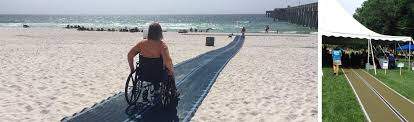
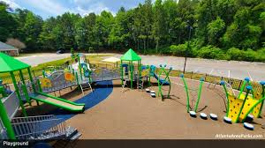

Accessible Sites & Community Initiatives
Accessible Beach Walkway
| Accessibility Feature | Wheelchair ramp and tactile paving |
|---|---|
| Community Program | Beach clean-up volunteer group |
Community Center Playground
| Accessibility Feature | Inclusive play equipment for all abilities |
|---|---|
| Community Program | After-school activities and workshops |
Urban Garden Project

| Accessibility Feature | Raised garden beds for wheelchair users |
|---|---|
| Community Program | Volunteer gardening and sustainability education |